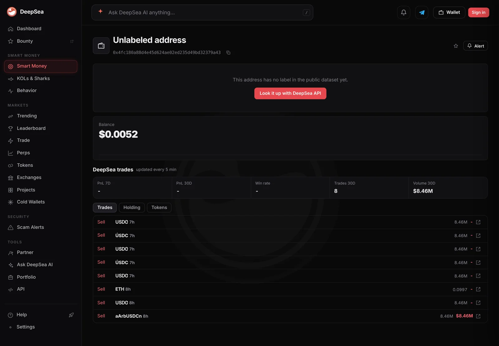

Fake 'USDC' copied an $8.46 million Aave withdrawal to the cent, minutes after it happened
Two big wallets left Aave on Arbitrum on Tuesday. Within minutes, lookalike tokens started writing the same amounts into their histories, and Arbiscan tags the sender as phishing.
Key points
- An unlabeled wallet took 8,463,320.57 USDC out of Aave at 5:05 p.m. ET on November 17. From 5:13 p.m., DeepSea logs six transfers of fake "USDC" for exactly that amount.
- SM6e36, No. 2 on DeepSea's smart money board, got the same treatment: five fakes after each of its two withdrawals.
- Arbiscan tags the account behind one of the fake transfers "Fake_Phishing1208614". That one transaction wrote 39 token transfers across many wallets.
 What DeepSea's data shows
What DeepSea's data shows
DeepSea's trade feed for wallet 0x4fc1...9a43 lists eight entries on November 17. Only one is real: the 5:05 p.m. ET Aave withdrawal. The other seven came from two tokens whose names copy "USDC" with lookalike letters (contracts ending 6e9e and e14e), plus one "ETH" entry:
- 5:13, 5:27, 5:45, 5:49, 6:20 and 6:23 p.m.: 8,463,320.57 fake USDC each, the exact real amount
- 5:24 p.m.: about 0.1 "ETH", which DeepSea gives no dollar value
SM6e36, the No. 2 wallet on DeepSea's 7-day board, shows the same pattern. After its $9.50 million withdrawal at 8:27 a.m., fakes for 9,500,000 arrived at 8:32, 8:56, 9:01, 9:30 and 9:35 a.m. After its $551,868.82 withdrawal at 5:50 p.m., five more followed between 5:55 and 7:00 p.m. Five fakes for 7,031,117.85 also appear between 2:52 and 3:53 p.m., with no matching real trade in DeepSea's feed.
DeepSea's 24-hour shark totals count only the real withdrawals. The wallet feeds still list the fakes as sells.

Data: DeepSea (desea.io), checked November 18, 2026, 12:45 a.m. ET.
What Arbiscan shows
Data from DeepSea and Arbiscan. The real withdrawal shows 8,463,320.572247 USDC paid by Aave's Pool V3. The fake transfer at 6:23 p.m. ET is a different kind of record. It came from an account Arbiscan tags Fake_Phishing1208614, calling a contract tagged Fake_Phishing1208615.
That single transaction wrote 39 token transfers. One shows 8,463,320.572247 of the lookalike token leaving 0x4fc1...9a43 for an address starting 0xBcaB. Another shows 551,868.818417 leaving SM6e36 for one starting 0xC29b. Ten others are zero-value USDC transfers from addresses Arbiscan labels Binance. The rest involve other wallets.
How address poisoning works
Anyone can create a token, give it a name that looks like USDC, and make it emit transfer records that appear to come from someone else's wallet. The wallet owner does not sign them and loses nothing from the record itself. The danger comes later: this trick, often called address poisoning, plants an address in a wallet's history that may look like one the owner uses, in the hope that a future payment is copied to it. Checking the full address and the token contract before sending is the defense.

LC Insight analysis
This section is our reading of the facts above, not a statement of fact.
- We think the speed matters most. The first fake came 5 to 8 minutes after each real withdrawal, which suggests automated watchers reading big moves on chain.
- Matching the amount to the cent makes a fake line look like part of a real trade, so a quick glance at a history page is not enough.
- Tools that count these as trades can overstate a wallet's activity. DeepSea's 24-hour totals left them out, but its per-wallet feeds did not.
What's next
- Whether either wallet sends funds to an address starting 0xBcaB or 0xC29b
- Whether more big Aave withdrawals draw the same fakes
- Whether DeepSea filters lookalike tokens from wallet feeds
Disclaimer. This article is based on public information and the sources listed below as of the update time shown. It is for information only and is not investment, legal or tax advice. Figures may change as companies and authorities publish new data.
Sources
- DeepSea, wallet feed 0x4fc1...9a43 (read November 18, 2026, 12:45 a.m. ET)
- DeepSea, trader page and feed SM6e36 (read November 18, 2026, 12:45 a.m. ET)
- DeepSea, 24-hour shark flow feed (read November 18, 2026, 12:35 a.m. ET)
- Arbiscan, Aave withdrawal of 8,463,320.57 USDC (read November 18, 2026, 12:46 a.m. ET)
- Arbiscan, fake token transaction tagged Fake_Phishing1208614 (read November 18, 2026, 12:50 a.m. ET)